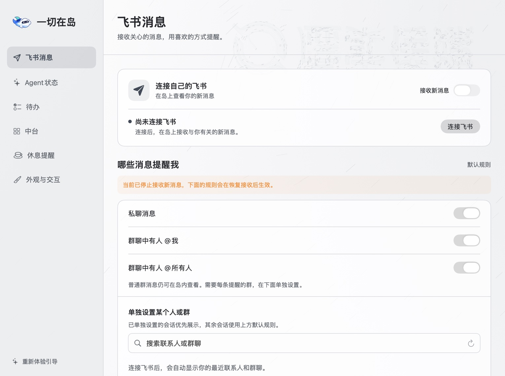

把工作，收进灵动岛。
你的 Mac 顶部工作台。
飞书消息、Agent 状态、待办和中台，抬眼就能看到。
下载 Mac 版
Apple M 系列 · macOS 15 或更高版本
内含图文安装指引 · 六步完成初次设置
尚无 Apple 证书，首次打开请看安装说明
打开 DMG，将“一切在岛”拖入应用程序。查看安装帮助
点开一条消息，试试完整阅读。
交互体验 · 合成数据，仅在本页生效
和 App 一样：移入展开，移开收起；需要停留时点小锁。
看得见的设置
每一页，都来自现在的 App。

私聊、群聊按你选择的规则提醒。消息只在内存里处理，不修改飞书已读状态。
查看连接与使用说明 ↗少切几个窗口，多留一点专注。
原生 Mac 应用，使用你自己的账号连接。
飞书消息仅在内存中处理，待办与完成历史保存在本机。